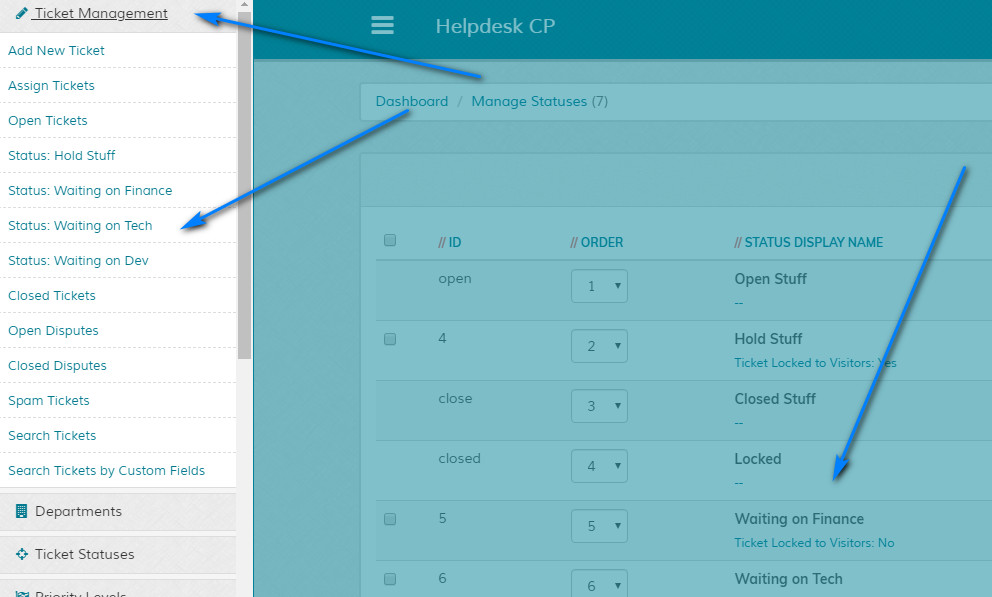
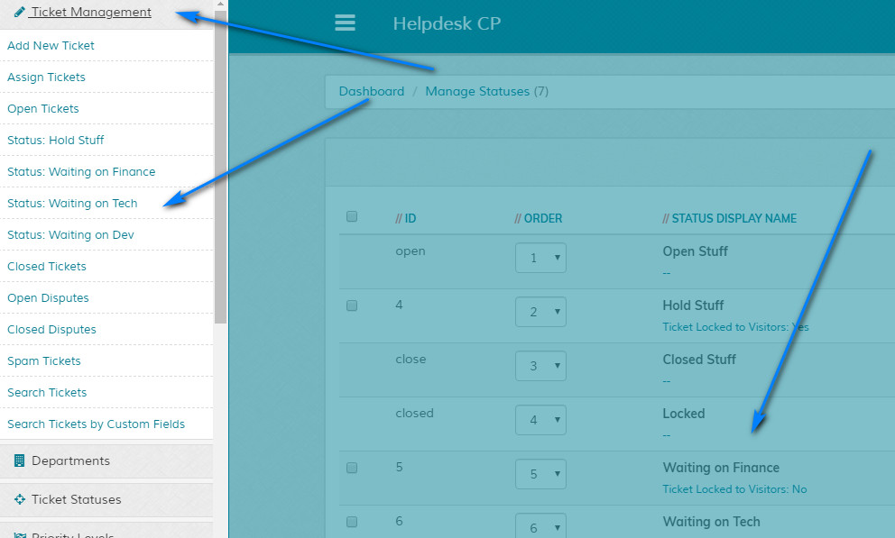

Add Status
Overview
Enables adding of new ticket statuses for backend use ONLY. Please read carefully. Click example images to display full size version in new tab/window.
Screenshot
{kind=link}
Default Statuses
Note that Open, Closed and Locked are default statuses and can be renamed, but not removed. These are the main legacy
statuses from all previous versions.
Open - Refers to open tickets and the Open Tickets menu option.
Close - Refers to closed tickets and the Closed Tickets menu option.
Locked - The Locked status remains the same as previous versions and doesn't allow the visitor to re-open the ticket. The lock option remains regardless of it's name, so on ticket list / view screens, the 'Lock Ticket' option refers to this status. You can always change the text in the language files if required.
Above also applies to disputes if enabled.
Open - Refers to open tickets and the Open Tickets menu option.
Close - Refers to closed tickets and the Closed Tickets menu option.
Locked - The Locked status remains the same as previous versions and doesn't allow the visitor to re-open the ticket. The lock option remains regardless of it's name, so on ticket list / view screens, the 'Lock Ticket' option refers to this status. You can always change the text in the language files if required.
Above also applies to disputes if enabled.
New Status
Status Display Name - Enter new ticket status name. Max characters 100. Additional
ticket statuses are treated the same as open tickets. If a ticket has a custom status it is open. Statuses are just a
way of filtering tickets.
Ticket Locked to Visitors - If set, ticket is locked to visitors in this status and visitors cannot add any more replies. If replies are sent via imap they are ignored. Note that this only applies to new statuses, the behaviour of the default statuses Open, Closed & Locked remains the same.
Ticket Ignored by Auto Close Option - If set, tickets with this open status are ignored by the Auto Close tickets cron routine.
Ticket Locked to Visitors - If set, ticket is locked to visitors in this status and visitors cannot add any more replies. If replies are sent via imap they are ignored. Note that this only applies to new statuses, the behaviour of the default statuses Open, Closed & Locked remains the same.
Ticket Ignored by Auto Close Option - If set, tickets with this open status are ignored by the Auto Close tickets cron routine.
Display
When you add a new status, a new option appears for that status in the off canvas menu
in the Ticket Management area. You'll need to refresh screen to see the new statuses. Clicking a status will show all
tickets currently in that status EXCEPT spam tickets and tickets waiting to be assigned. Staff must be granted permissions to view statuses if not admins.

On any status ticket view list screen, same permissions apply as for other ticket screens.

{kind=link}
On any status ticket view list screen, same permissions apply as for other ticket screens.